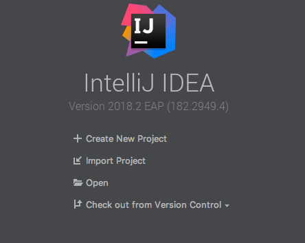

Un IDE, o Integrated Development Environment (Ambiente di Sviluppo Integrato), è un software completo che offre agli sviluppatori un ambiente di lavoro centralizzato per la scrittura, la modifica,
il debugging e la gestione del codice di un'applicazione software. Gli IDE sono progettati per semplificare e migliorare il processo di sviluppo del software, fornendo una serie di strumenti e funzionalità integrate in un'unica interfaccia utente coesa.

1: Editor di Codice: Gli IDE forniscono un editor di codice avanzato con funzionalità come evidenziazione della sintassi, autocompletamento e formattazione automatica. Queste caratteristiche aiutano gli sviluppatori a scrivere codice in modo più efficiente e accurato.
2: Compilazione e Debugging: Un IDE è in grado di gestire il processo di compilazione dell'applicazione, consentendo agli sviluppatori di verificare se il loro codice è sintatticamente corretto e di eseguirlo per individuare e risolvere bug.
3: Gestione dei Progetti: Gli IDE consentono agli sviluppatori di organizzare il loro codice in progetti e offrono strumenti per la gestione dei file, la creazione di nuovi progetti e la gestione delle dipendenze.
4: Strumenti di Refactoring: Gli IDE offrono funzionalità di refactoring che consentono agli sviluppatori di ristrutturare il codice in modo sicuro e automatizzato, migliorando la sua leggibilità e manutenibilità.
5: Integrazione con Strumenti Esterni: Molgli IDE integrano strumenti di controllo della versione, sistemi di build e gestori di pacchetti per semplificare il lavoro con i componenti esterni.
6: Debugger: Gli IDE forniscono strumenti di debugging avanzati che consentono agli sviluppatori di individuare e correggere errori nel codice in modo interattivo, esaminando variabili, stack trace e altro.
7: Autocompletamento e Suggerimenti: L'autocompletamento del codice e i suggerimenti context-aware aiutano gli sviluppatori a scrivere codice più velocemente, riducendo gli errori.
8: Strumenti di Profilazione: Alcuni IDE offrono strumenti di profilazione che consentono di identificare e ottimizzare le parti del codice che richiedono maggiori risorse o sono lente nell'esecuzione.
9: Integrazione con Framework e Linguaggi Specifici: Gli IDE spesso supportano linguaggi di programmazione specifici e framework, fornendo strumenti e modelli per lo sviluppo in tali contesti.
10: Plugin ed Estensibilità: Molti IDE sono altamente personalizzabili attraverso l'installazione di plugin che aggiungono funzionalità specifiche. Questa estensibilità li rende adatti a una vasta gamma di esigenze di sviluppo.